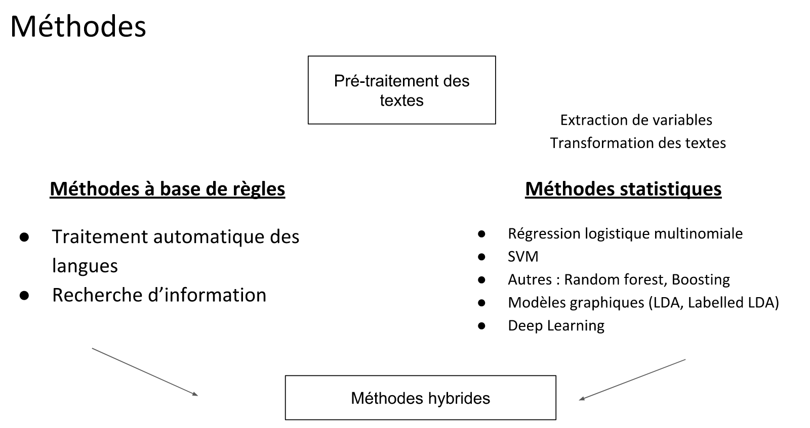
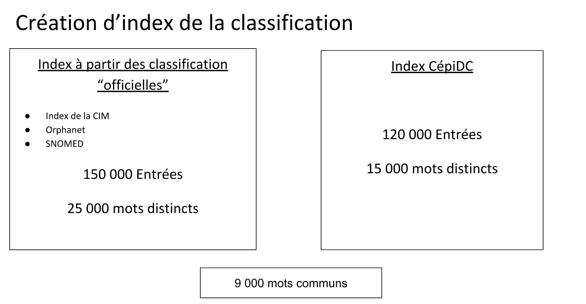

class: center, middle ###Traitement automatique des documents médicaux pour le codage des diagnostics dans la Classification Internationale des Maladies ####Application au codage des certificats de décès <br> Réunion Biblio - SBIM<br> 7 novembre 2018 <br><br><br> Rémi Flicoteaux<br> .center[ ] --- # Plan - Contexte * Classification internationale des maladies * Automatisation du codage - Méthodes - Application : traitement des certificats de décès - Conclusion & perspectives --- ## Contexte d’utilisation de la CIM-10 - Nombreuses classifications dans le domaine médical * Communiquer * Evaluer * Suivre - Classification internationale des maladies (CIM) * Certificats de décès * Codage des séjours hospitaliers système de tarification à l'activité --- ## Classification internationale des maladies - Objectif : analyse systématique, interprétation et comparaison des données de mortalité et de morbidité dans des régions et à des époques différentes. - Classification statistique $\ne$ nomenclature des maladies * nomenclature : devrait comporter un titre séparé pour chaque état morbide connu ou entité nosologique. * classification : identifier des entités pathologiques spécifiques + établir une présentation statistique * ni développée, ni utilisable pour la prise en charge des patients - $ \simeq$ 15 000 codes répartis en 21 chapitres, groupes, catégories et extensions (38 000 codes avec Ch 20 causes externes de morbidités) * malgré le nombre de codes élevé encore très loin des entités nosologiques utilisées en pratique par les médecins --- # Réalisation du codage - Actuellement réalisé par des humains * Soit les médecins à partir de leurs connaissances des dossiers patients * Soit les technicien(ne)s d’information médicale à partir de l’ensemble des documents disponibles dans le dossier patient. - Dossier patient → codes * Identification d’un diagnostic * Choix du code pour ce diagnostic - CIM comporte de nombreuses imprécisions → 3 142 fils de discussions sur le forum de l’ATIH réservé aux questions de codage !! - Cas particulier : organisation du codage au Centre d'épidémiologie sur les causes médicales de Décès (CépiDC), unité INSERM responsable en France de l'enregistrement des causes médicales de décès * Codage réalisé par les technicien(ne)s d'information médicales * Thésaurus garanti reproductibilité du codage entre les codeurs et à travers le temps --- ###Peut on développer des algorithmes qui permettent de produire automatiquement ces codes ? - Description de la tâche * Traitement automatique des données textuelles * Plusieurs codes par documents (classification multilabel) - Etat de l’art * Bases de données publiques : Compte rendus de radiologie (2007), Dossiers médicaux de réanimation (MIMIC), Certificats de décès (2015) * Postionnement du problème .left-column[ .center[ ] ] .right-column[ - Classification multi-label en grande dimension avec inégalité de fréquence des cas dans chaque classe ] --- ###Peut on développer des algorithmes qui permettent de produire automatiquement ces codes ? - Description de la tâche * Traitement automatique des données textuelles * Plusieurs codes par documents (classification multilabel) - Etat de l’art * Bases de données publiques : Compte rendus de radiologie (2007), Dossiers médicaux de réanimation (MIMIC), Certificats de décès (2015) * Postionnement du problème .left-column[ .center[ <img src="images/Graphique_Zipf_pour_Ulysses.png" style="width: 200px" /> ] ] .right-column[ - Traitement automatique des textes = inégalité de fréquence des mots utilisés<br> Loi de Zipf (source [wikipedia](https://fr.wikipedia.org/wiki/Loi_de_Zipf)) ] --- .center[  ] --- ### Prétaiement des données textuelles - Tokensization * séparation des textes en phrase * séparation des phrases en liste de mots par la suppression des caractères de ponctuation - Détection et correction automatique des fautes d’orthographe - Gestion des accronymes - Suppression des mots de liaison qui n'ont pas d'influence sur le sens de la phrase (mots stops) --- ## Méthodes à base de règles .center[ ] --- ### Recherche d’information pour la classification automatique de documents en CIM 10 Rechercher mots / expression dans les textes .left-column[ .center[Dictionnaire] - Classification * $\ne$ nomenclature * Entrée = définition d’une entité nosologique > nommer * difficile à utiliser tel quel - Index / Thésaurus * mots → index * expression associée à un code ] .right-column[ .center[Méthodes] - Recherche exacte ordonnées +/- erreurs (fuzzy matching) → algorithme optimisé * ex : Finite State Transducer (FST) in [Lucene/Solr](https://github.com/OpenSextant/SolrTextTagger) - Recherche exacte non ordonnée - Calcul de scores sur la base des probabilités d'association mots/codes - Calcul de distance → vectorisation (cf) mais plutôt sur les textes eux-mêmes que sur définition ] --- ### Méthodes statistiques - Préparation des variables <br/> .center[ ] --- ### Projections vectorielles : Embeddings $$embedding(\text{'salad'}) = [3.28, -0.45, ... 7.11] \in \mathbb{R}^d$$ - Denses et continus - Peuvent être obtenus en multipliant one-hot encoding vectors par matrice de poids $\mathbf{W} \in \mathbb{R}^{n \times d}$: $$embedding(x) = onehot(x) . \mathbf{W}$$ - $\mathbf{W}$ paramètres * appris avec les autres paramètres au moment de la classification * transfert learning → appris par un autre modèle (modèles de reprénsetation du language) .center[ ] --- ### Machine learning .left-column[ - SVM - LDA - Autres : fôrets aléatoires, boosting (XgBoost) ] .right-column[ - Apprentissage profond * Réseaux convolutionnels * Réseaux récurrents ] -- <br/><br/><br/> .center[ ] --- ## Quelques notions sur le deeplearning ####Sildes et schémas empruntées à : - O.Grisel & C.Ollion, [Cours de Deeplearning Master Datascience, Université Paris Saclay](https://github.com/m2dsupsdlclass/lectures-labs) - F.Chollet [Deeplearning with R / Python](https://www.manning.com/books/deep-learning-with-python) - C. Davis [Quora: Is a single layered ReLU network still a universal approximator?](https://www.quora.com/Is-a-single-layered-ReLu-network-still-a-universal-approximator) - M. Nielsen [A visual proof that neural nets can compute any function](http://neuralnetworksanddeeplearning.com/chap4.html) ####Autres références utiles : - Andrew Ng [Cours sur coursera](https://fr.coursera.org/learn/neural-networks-deep-learning) - I. Goodfellow, Y. Bengio and A. Courville, [Deeplearning](https://www.deeplearningbook.org/) - H. Larochelle, [Thèse](http://www.dmi.usherb.ca/~larocheh/publications/thesis.pdf), [page personnelle Université de Sherbrooke](http://www.dmi.usherb.ca/~larocheh/) --- # Neurone artificiel .left-column[ <br> .center[ $z(\mathbf{x}) = \mathbf{w}^T \mathbf{x} + b$ $f(\mathbf{x}) = g(\mathbf{w}^T \mathbf{x} + b)$ ] ] .right-column[ .center[ ] ] .center[ <img src="images/activation_functions.svg" style="width: 680px;" /> ] .footnote.small[O.Grisel & C.Ollion, [Cours de Deeplearning Master Datascience, Université Paris Saclay](https://github.com/m2dsupsdlclass/lectures-labs)] --- ### Couche caché de Neurones artificiel .left-column[ .center[ ] ] .right-column[ .center[ ] ] .center[ $f(\mathbf{x}) = g(W^T \mathbf{x} + b)$ ] <br> .left-column[ .center[ ] ] .right-column[ .center[ ] ] <br> .center[ $ f(\mathbf{x}) = \sum \mathbf{W}^T_2 g(\mathbf{W}^T_1 \mathbf{x} + b_1) + b_2 $ ] --- ### Couche caché de Neurones artificiel .footnote.small[Toute fonction bornée suffisamment régulière peut être approchée uniformément, avec une précision arbitraire, dans un domaine fini de l’espace de ses variables, par un réseau de neurones comportant une couche de neurones cachés en nombre fini, possédant tous la même fonction d’activation, et un neurone de sortie linéaire. <br>[H ORNIK et al. 1989], [H ORNIK et al. 1990], [H ORNIK 1991] ] $ f(\mathbf{x}) = \sum \mathbf{W}^T_2 g(\mathbf{W}^T_1 \mathbf{x} + b_1) + b_2 $ .left-column[ .center[ ] ] .right-column[ .center[ ] ] --- # Approximation de fonctions avec activation ReLU .left-column[ ```python import numpy as np import matplotlib.pyplot as plt def relu(x): return np.maximum(x, 0) def rect(x, a, b, h, eps=1e-7): return h / eps * ( relu(x - a) - relu(x - (a + eps)) - relu(x - b) + relu(x - (b + eps))) x = np.linspace(-3, 3, 1000) y = rect(x, 0, 1, 1.3) plt.plot(x, y) ``` ] .right-column[ ] .footnote.small[ [Quora: Is a single layered ReLU network still a universal approximator?](https://www.quora.com/Is-a-single-layered-ReLu-network-still-a-universal-approximator), Conner Davis] .footnote.small[O.Grisel & C.Ollion, [Cours de Deeplearning Master Datascience, Université Paris Saclay](https://github.com/m2dsupsdlclass/lectures-labs)] --- # Approximation de fonctions avec activation ReLU .left-column[ ```python import numpy as np import matplotlib.pyplot as plt def relu(x): return np.maximum(x, 0) def rect(x, a, b, h, eps=1e-7): return h / eps * ( relu(x - a) - relu(x - (a + eps)) - relu(x - b) + relu(x - (b + eps))) x = np.linspace(-3, 3, 1000) *y = ( rect(x, -1, 0, 0.4) * + rect(x, 0, 1, 1.3) * + rect(x, 1, 2, 0.8)) plt.plot(x, y) ``` ] .right-column[ ] .footnote.small[ [Quora: Is a single layered ReLU network still a universal approximator?](https://www.quora.com/Is-a-single-layered-ReLu-network-still-a-universal-approximator), Conner Davis ] .footnote.small[O.Grisel & C.Ollion, [Cours de Deeplearning Master Datascience, Université Paris Saclay](https://github.com/m2dsupsdlclass/lectures-labs)] --- # Réseaux de Neurones artificiel .center[ ] .footnote.small[M. Nielsen [A visual proof that neural nets can compute any function](http://neuralnetworksanddeeplearning.com/chap4.html)] --- # Réseaux de Neurones artificiel .center[ <img src="images/RNN_N_inputs.png" style="width: 210px;" /> ] .center[ Rég. logisitque | RN 1 couche cachée | RN 1 couche cachée X sorties ] <br> .center[ ] --- # Efficient Oscillations with Composition .left-column[ ```python import numpy as np import matplotlib.pyplot as plt def relu(x): return np.maximum(x, 0) def tri(x): return relu( relu(2 * x) - relu(4 * x - 2)) x = np.linspace(-.3, 1.3, 1000) y = tri(x) plt.plot(x, y) ``` ] .right-column[ ] .footnote.small[ [Benefits of depth in neural networks]( https://www.youtube.com/watch?v=ssaXJqG9Dz4), Matus Telgarsky, 2016 ] .footnote.small[O.Grisel & C.Ollion, [Cours de Deeplearning Master Datascience, Université Paris Saclay](https://github.com/m2dsupsdlclass/lectures-labs) ] --- # Efficient Oscillations with Composition .left-column[ ```python import numpy as np import matplotlib.pyplot as plt def relu(x): return np.maximum(x, 0) def tri(x): return relu( relu(2 * x) - relu(4 * x - 2)) x = np.linspace(-.3, 1.3, 1000) *y = tri(tri(tri(x))) plt.plot(x, y) ``` ] .right-column[ ] .center[ 1 more layer → 2x more oscillations ] .footnote.small[ [Benefits of depth in neural networks]( https://www.youtube.com/watch?v=ssaXJqG9Dz4), Matus Telgarsky, 2016 ] .footnote.small[O.Grisel & C.Ollion, [Cours de Deeplearning Master Datascience, Université Paris Saclay](https://github.com/m2dsupsdlclass/lectures-labs) ] --- # Efficient Oscillations with Composition .left-column[ ```python import numpy as np import matplotlib.pyplot as plt def relu(x): return np.maximum(x, 0) def tri(x): return relu( relu(2 * x) - relu(4 * x - 2)) x = np.linspace(-.3, 1.3, 1000) *y = tri(tri(tri(tri(x)))) plt.plot(x, y) ``` ] .right-column[ ] .center[ 1 more layer → 2x more oscillations ] .footnote.small[ [Benefits of depth in neural networks]( https://www.youtube.com/watch?v=ssaXJqG9Dz4), Matus Telgarsky, 2016 ] .footnote.small[O.Grisel & C.Ollion, [Cours de Deeplearning Master Datascience, Université Paris Saclay](https://github.com/m2dsupsdlclass/lectures-labs) ] --- # For a fixed param budget, deeper is better .center[ ] .footnote.small[ [On the Number of Linear Regions of Deep Neural Networks]( https://arxiv.org/abs/1402.1869), G. Montúfar, R. Pascanu, K. Cho, Y. Bengio, 2014. ] .footnote.small[O.Grisel & C.Ollion, [Cours de Deeplearning Master Datascience, Université Paris Saclay](https://github.com/m2dsupsdlclass/lectures-labs) ] --- # Réseaux convolutionnels - application de filtres sur les données en entrée du réseau * transformation linéaire + réduction de dimension (produit scalaire d'un vecteur de poids) .footnote.small[F.Chollet [Deeplearning with R / Python](https://www.manning.com/books/deep-learning-with-python) ] --- <br><br> .center[ ] --- # Réseaux récurrents Traitement séquentiel ou chaque étape du traitement produit deux types de sorties : - une sortie définitive qui sera destinée à alimenter la sortie finale du réseaux - une sortie mémoire qui sera ré-utilsée lors de l’étape ultérieure réalisant une boucle interne (voie récurrente) .center[ ] .center[ .small[F.Chollet [Deeplearning with R / Python](https://www.manning.com/books/deep-learning-with-python) ] ] .center[ .small[ Chaque traitement prend comme entrée la combinaison : entrée t + récurrence ] ] --- # Réseaux récurrents LSTM = Traitement séquentiel ou chaque étape du traitement produit : - une sortie définitive qui sera destinée à alimenter la sortie finale du réseaux - une sortie mémoire qui sera ré-utilsée lors de l’étape ultérieure réalisant une boucle interne (voie récurrente) - voie supplémentaire (cary track) en complément de la voie récurrente, mis à jour par la concaténation de trois flux : .small[ * deux flux de récurrence * vecteur d’entrée du traitement en cours. ] .center[ ] .center[ .small[F.Chollet [Deeplearning with R / Python](https://www.manning.com/books/deep-learning-with-python) ] ] --- <br><br> .center[ ] --- # Application : automates pour le codage des certificats de décès --- ## CLEF eHealth - Conférence internationale domaine traitement des langues naturelles - Task 1 : Multilingual Information Extraction - ICD10 coding - Depuis 2015 → jeu de données des certificats français: collaboration CépiDC / LIMSI <br> .footnote.small[ Goeuriot L, Kelly L, Suominen H, Hanlen L, Névéol A, Grouin C, Palotti J, Zuccon G. Overview of the CLEF eHealth Evaluation Lab 2015. In: Information Access Evaluation. Multilinguality, Multimodality, and Interaction. Springer, 2015. ] --- CLEF eHealth - Présentation des données .center[ ] --- # CLEF eHealth 2018 - Répartition des codes - 304 021 documents = lignes de certificat de décès - 379 802 codes diagnostics au total (1,2 diagnostic par document) - Nombres de diagnostics différents = 3259 - Fréquence des codes diagnostics .center[ ] --- # CLEF eHealth 2018 - Répartition des codes - 304 021 documents = lignes de certificat de décès - 379 802 codes diagnostics au total (1,2 diagnostic par document) - Nombres de diagnostics différents = 3259 - Fréquence des codes diagnostics Documents par code | codes différents utilisés | Diagnostics au total (%) ----------------------------| -------------------------------|------------------------------------- > 1000 documents | 72 codes | 240 301 diag. (63.3%) 500-1000 documents | 119 codes | 35 891 diag. (9.4%) 200-500 documents | 72 codes | 35 891 diag. (9.4%) < 200 documents | 3 007 codes | 59 185 diag. (15.6%) 80% des documents sont codés avec 20% des codes. --- # Pré-traitement Chaîne de traitement des données textuelles - Séparation des phrases en liste de mots par la suppression des caractères de ponctuation - Remplacement des principaux acronymes par leur expressions complètes à l’aide d’un dictionnaire construit manuellement (cf annexe …) - Séparation des mots composés en deux tokens. - Suppression des mots stop - Correction automatique des fautes d’orthographe #### Vecteur de mot pour chaque cause de décès --- # CLEF eHealth 2018 - Répartition des mots - 304 021 documents = lignes de certificat de décès - 955 437 mots - 3,1 mots par document - 7 974 mots différents - Fréquence d’utilisation des mots cf (1 seule occurence = 2 231 mots) .center[ ] --- ## Dictionnaires .center[  ] --- ## Résultats Modèles | Précision | Rappel | F1-score ------------- | -------------|---------|---------- SVM (2016) | 88.1 % | 65.5 % | 75.1 % CNN | 82.0 % | 74.7 % | 79.9 % RNN | 87.5 % | 76.4 % | 81.6 % RI | 61.4 % | 63.8 % | 62.6 % RNN + RI | 81.6 % | 77.7 % | 76.2 % --- ## Résultats Documents par code | Vrais positifs | Faux négatifs ----------------------------| ---------------|--------------- RNN | | > 1000 documents | 82.8 % | 17.2 % 500-1000 documents | 73.2 % | 26.8 % 200-500 documents | 63.9 % | 36.1 % < 200 documents | 34.4 % | 65.6 % RNN + RI | | > 1000 documents | 91.0 % | 9.0 % 500-1000 documents | 87.5 % | 12.5 % 200-500 documents | 81.3 % | 18.7 % < 200 documents | 64.3 % | 35.7 % --- #Conclusion & perspectives - Déséquilibre de fréquence & nombre de cas * ML seul difficile * RI mais dépendance +++ thésaurus → qualité, maintenance,... - Résultats Clef 2016/2017 * RI seuls très efficace (meilleurs résultats du challenge 2016) mais modification thésaurus CépiDC - Préselection sur les textes eux-mêmes - 1 seul code par entrée - Optimisation de l'algorithme de recheche [Lucene/Solr Text tagger](https://github.com/OpenSextant/SolrTextTagger) <br>E. van Mulligen [Erasmus @ Clef 2016](http://ceur-ws.org/Vol-1609/16090171.pdf) * ML : RNN les plus parformants - Architecture un peu plus complexe que celle utilisée ici avec meilleurs résultats en 2017 : Z. Miftahutdinov [KFUJ @ Clef 2017](https://github.com/dartrevan/CLEF-2017-train-scripts) --- ## Applicabilité pour le codage PMSI - Dossiers patients informatisés * Compte-rendus d’hospitalisation : Pré-Traitement +++ * Examens complémentaires - Anatomo-pathologie : transcodage Adicap / CIM 10 - Biologie cf RN - Recherche d'Information * Thésaurus hospitalier (Hector à l'APHP, ...) mais non validé * Performances probablement moins importantes dans ce contexte - Réseaux de Neurones * Concaténation de modèles pour prise en compte textes plus longs * Intégration d'une modélisation avec les données de biologie <br>ex : J.B. Escudié [arxiv 2018](https://arxiv.org/pdf/1803.09533.pdf) --- ## Projets APHP - Expérimentation sociétés externes * Apprentissage données EDS BCH / PSL * Performances mesurées sur le codage des séjours courts < 3j - Projet CSE * Etude sur l'ensemble des dossiers patients contenus dans l'EDS * Partenariat Ecole Polytechnique / Iqvia